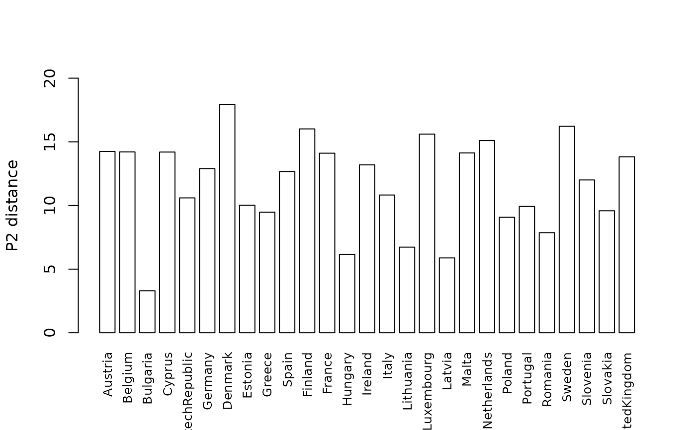

Calculates the \(P_2\) distance synthetic indicator for a set of variables. This is the main function of the package.
Usage
p2distance(
matriz,
reference_vector = NULL,
reference_vector_function = min,
iterations = 20,
umbral = 1e-04
)Arguments
- matriz
A matrix with spatial entities in rows and variables in columns.
- reference_vector
Optional. A reference vector defined for each partial indicator, used to compare different spatial entities.
- reference_vector_function
Optional. Function used to build the reference vector when
reference_vectoris not supplied.minis the default; other common choices aremax,mean,median, etc. SeemakeReferenceVector()for details.- iterations
Maximum number of iterations for the computational process until convergence is reached.
- umbral
The algorithm stops when the difference between two consecutive iterations is lower than this threshold.
Value
A list with the following elements:
discrimination.coefficient: Vector of discrimination coefficients (DC) for each variable (Ivanovic, 1974). DC ranges between 0 and 2: a variable with the same value for every spatial entity has DC = 0 (no discriminant power), while a variable with a single non-zero value has DC = 2 (full discriminant power). See Zarzosa (1996) and Zarzosa & Somarriba (2012).p2distance: Vector with the final \(P_2\) distance value for each spatial entity.p2distances: Matrix with the \(P_2\) distance values resulting from each iteration.diff_p2distances: Matrix with the differences between two consecutive \(P_2\) distances.iteration: Number of iterations performed.umbral: Threshold used to stop the iterations.variables_sort: Variable names ordered by entrance order in the last iteration.correction_factors: Correction factor for each variable.cor.coeff: Correlation coefficient of each variable with the calculated \(P_2\) distance.partial.Indicators: For each spatial entity, the difference between the reference vector and the value of each variable, divided by the standard deviation. The sum of all partial indicators for a spatial entity is the Frechet Distance (DF), the maximum value the \(P_2\) distance can reach.
Details
The \(P_2\) distance, also called DP2, is used to measure welfare in quality-of-life applications, to build environmental quality indexes, and more generally to aggregate multiple partial indicators (variables) into a single measure that allows spatial entities to be compared. For a spatial entity r, the \(P_2\) distance is defined as: $$DP_{2}=\sum^{n}_{i=1}\left\lbrace\left(\frac{d_{i}}{\sigma_{i}}\right)\left(1-R^{2}_{i,i-1,i-2,\ldots,1}\right)\right\rbrace$$ with \(R^{2}_{1}=0\), where \(d_{i}=|x_{ri}-x_{*i}|\), with the reference base \(X_{*}=(x_{*1},x_{*2},\ldots,x_{*n})\), and:
n is the number of variables
\(x_{ri}\) is the value of variable i for spatial entity r
\(\sigma_{i}\) is the standard deviation of variable i
\(R^{2}_{i,i-1,\ldots,1}\) is the coefficient of determination of the regression of \(X_i\) on \(X_{i-1}, X_{i-2}, \ldots, X_1\) already included
The numerical value of the DP2 index has no meaning by itself, but it is useful for comparing the state of different spatial entities in terms of welfare, environmental conditions, etc.
References
Ivanovic, B. (1974). Comment établir une liste des indicateurs de developpment. Revue de Statistique Appliquée, 22(2), 37-50.
Montero, J. M., Chasco, C., & Larraz, B. (2010). Building an environmental quality index for a big city: a spatial interpolation approach combined with a distance indicator. Journal of Geographical Systems, 12, 435-459.
Peña, J. B. (1977). Problemas de la medición del bienestar y conceptos afines (una aplicación al caso Español). Madrid: INE.
Peña, J. B. (2009). La medición del bienestar social: una revisión crítica. Estudios de Economía Aplicada, 27(2), 299-324.
Zarzosa, P. (1996). Aproximación a la medición del Bienestar social. Valladolid: Universidad de Valladolid.
Zarzosa, P., & Somarriba, N. (2012). An assessment of social welfare in Spain: Territorial analysis using a synthetic welfare indicator. Social Indicators Research. doi:10.1007/s11205-012-0005-0
Examples
## Calculate a welfare indicator for 27 European countries
data(welfare)
welfare <- as.matrix(welfare)
ind <- p2distance(welfare, reference_vector_function = min, iterations = 20)
#> [1] "Iteration 1"
#> [1] "Iteration 2"
#> [1] "Iteration 3"
#> [1] "Iteration 4"
## Examine the results
ind$p2distance
#> p2distance.4
#> Austria 14.243429
#> Belgium 14.205152
#> Bulgaria 3.300577
#> Cyprus 14.196170
#> CzechRepublic 10.595075
#> Germany 12.882661
#> Denmark 17.932001
#> Estonia 10.014157
#> Greece 9.467627
#> Spain 12.653989
#> Finland 16.014650
#> France 14.106968
#> Hungary 6.157913
#> Ireland 13.186726
#> Italy 10.822846
#> Lithuania 6.728374
#> Luxembourg 15.608905
#> Latvia 5.881641
#> Malta 14.124929
#> Netherlands 15.096630
#> Poland 9.072606
#> Portugal 9.927800
#> Romania 7.855658
#> Sweden 16.225990
#> Slovenia 12.005987
#> Slovakia 9.584544
#> UnitedKingdom 13.817885
ind$iteration
#> [1] 4
ind$variables_sort
#> [1] "standard" "social" "life.satis" "home" "happiness"
#> [6] "family" "night" "area" "life.0" "life.65"
#> [11] "job" "judicial" "education" "employement" "people"
#> [16] "health" "inequality" "stress" "hobbies" "dist.school"
ind$correction_factors
#> standard social life.satis home happiness family
#> 1.00000000 0.26994486 0.15647574 0.19019368 0.11374336 0.16464658
#> night area life.0 life.65 job judicial
#> 0.22771776 0.26803770 0.23019934 0.05377976 0.39866003 0.35480094
#> education employement people health inequality stress
#> 0.25202059 0.28405573 0.19859718 0.42516392 0.08949479 0.18883919
#> hobbies dist.school
#> 0.07721116 0.15296173
ind$cor.coeff
#> p2distance.4
#> happiness 0.8923932
#> life.satis 0.9032185
#> judicial 0.7240456
#> night 0.8259018
#> social 0.9193612
#> people 0.5994948
#> family 0.8366196
#> health 0.5648329
#> life.65 0.7758931
#> life.0 0.8013540
#> inequality -0.4733350
#> hobbies -0.3985391
#> education 0.6609428
#> standard 0.9572833
#> dist.school 0.3876915
#> area 0.8066489
#> home 0.8945082
#> stress -0.4232577
#> employement 0.6416367
#> job 0.7744487
ind$discrimination.coefficient
#> happiness life.satis judicial night social people
#> 0.08033682 0.22114042 0.37154869 0.21365413 0.19085162 0.21602518
#> family health life.65 life.0 inequality hobbies
#> 0.07274169 0.56579365 0.09533417 0.04596938 0.29771635 0.16633727
#> education standard dist.school area home stress
#> 0.09708026 0.14761252 0.06577282 0.07862064 0.12099290 0.31190294
#> employement job
#> 0.10930471 0.13470473
## Plot of the P2 distance indicator for European countries
barplot(ind$p2distance, beside = TRUE, col = "white", space = .3,
ylab = "P2 distance", ylim = c(0, 20),
names.arg = rownames(ind$p2distance), las = 3, cex.names = 0.8)
